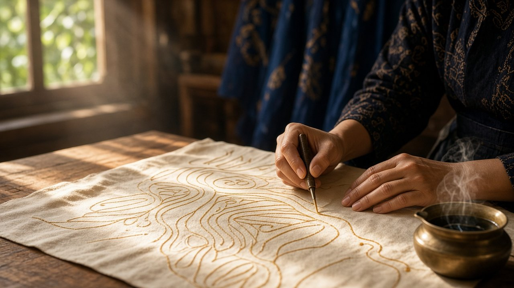
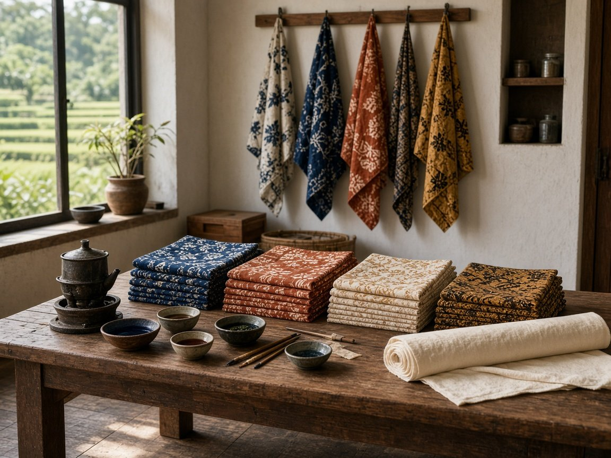
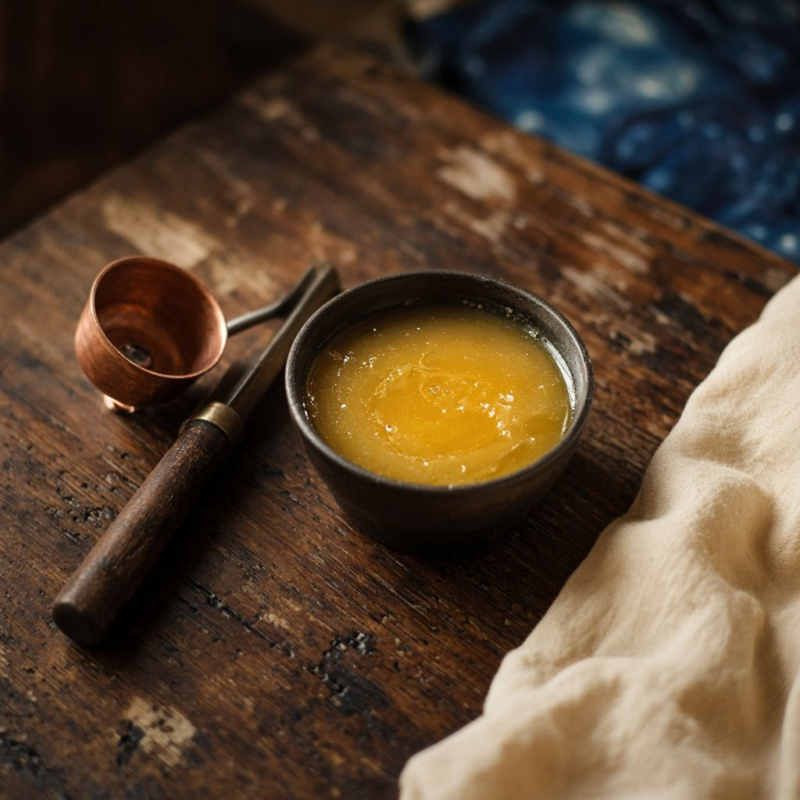
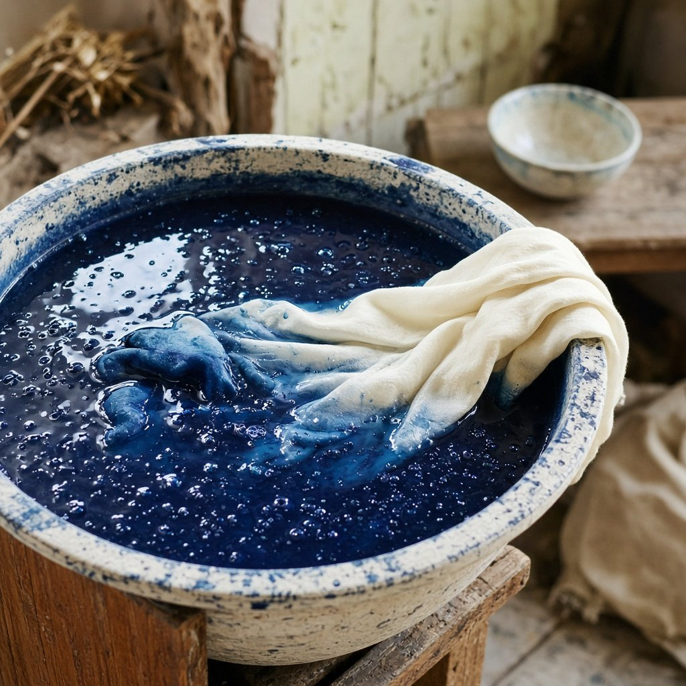
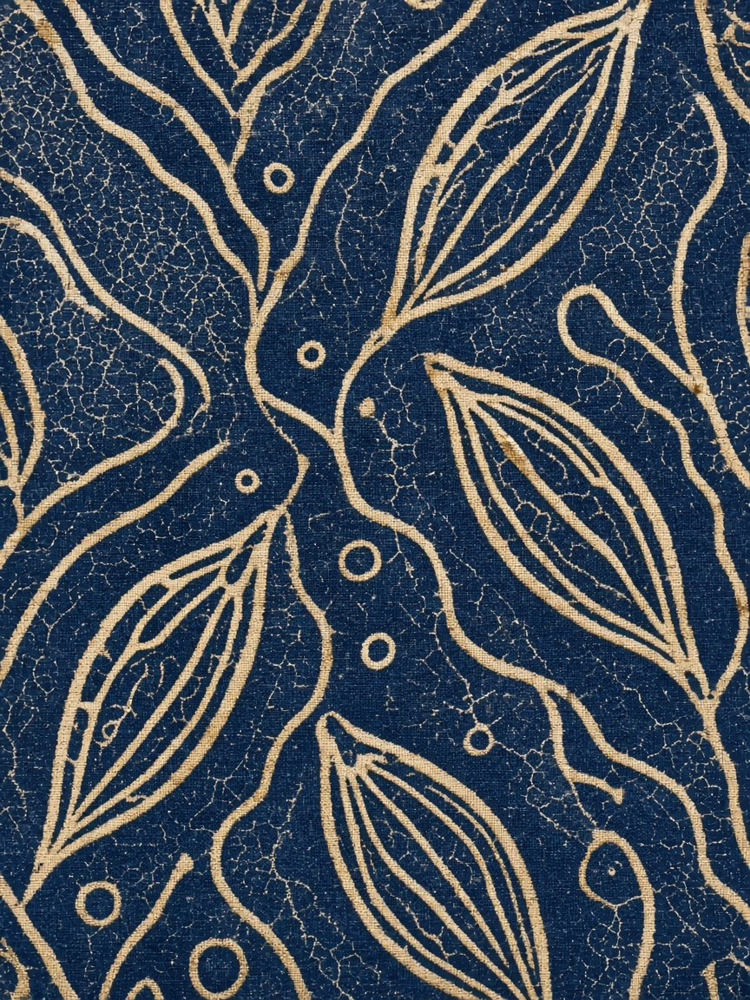
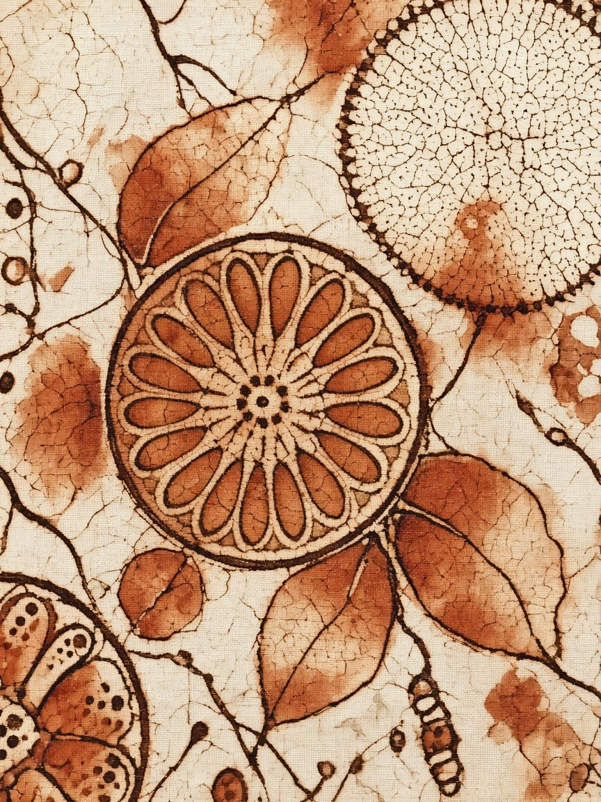
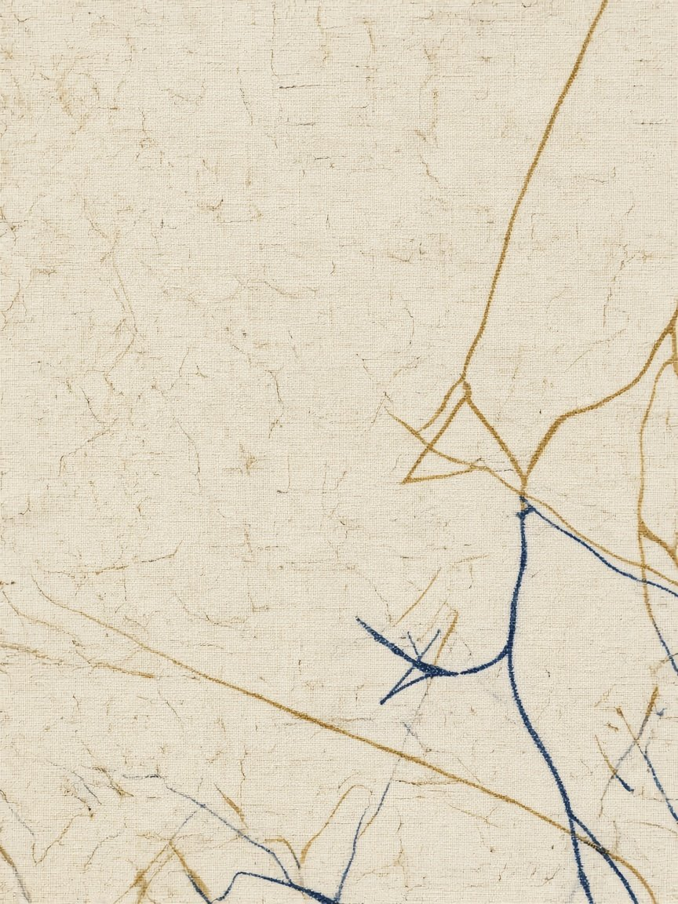

Sanggar batik tulis kontemporer · Pati
Kain yang digores pelan, sebelum warna datang.
Aruna Tulis adalah konsep sanggar batik tulis di Pati, Jawa Tengah. Setiap kain disusun dengan canting, malam, dan pewarna yang dipilih pelan — untuk busana, interior, dan kain yang dipakai lama.

01 — Cerita
Sebuah sanggar imajiner di tepi sawah Pati.
Di Pati, pagi sering datang bersama cahaya yang jatuh miring ke meja kayu. Di atas kain mori yang masih polos, garis ditulis satu per satu. Tidak ada mesin yang menggantikan canting; yang ada hanya tangan, malam, dan waktu.
Aruna Tulis tidak meniru motif lama secara utuh. Kawung, parang, atau flora Jawa menjadi titik berangkat, lalu disusun ulang menjadi komposisi yang lebih sunyi: lebih banyak napas, lebih sedikit ramai. Hasilnya dimaksudkan untuk dipakai, bukan hanya dipajang.
Laman ini adalah latihan desain untuk usaha lokal — sebuah concept demo, bukan profil sanggar yang sedang buka.

02 — Proses
Empat langkah, masih dikerjakan dengan tangan.
Urutan ini mengikuti cara kerja batik tulis pada umumnya, disusun sebagai contoh struktur halaman, bukan janji produksi.
-
Menyusun motif
Pola diuji di kertas dan di kain kecil. Beberapa garis dibuang lagi sampai komposisinya terasa longgar, tidak sesak.
-

Menulis malam
Malam dipanaskan, lalu dituliskan sebagai penahan warna. Garis yang sedikit goyah dibiarkan, karena itu jejak tangan.
-

Mencelup warna
Indigo, tanah, atau soga. Kain masuk, diangkat, diangin-anginkan, lalu kadang dicelup lagi sampai nadanya tenang.
-
Melorod dan merapikan
Malam dilepas dengan air panas. Kain dicuci, dijemur, lalu dilipat atau dijahit sesuai keperluan — busana atau interior.
03 — Koleksi konsep
Tiga kain, tiga napas yang berbeda.
Nama dan gambar di bawah ini dibuat untuk demo, bukan katalog penjualan. Tidak ada stok, harga, atau ulasan.
-

Alur Indigo
Latar nila dengan garis yang mengalir seperti sungai kecil. Banyak retak halus dari malam yang pecah saat pewarnaan.
-

Biji Tanah
Warna terracotta di atas kain krem. Motif biji, daun, dan lingkaran disusun longgar, tidak simetris sempurna.
-

Senja Tipis
Banyak ruang kosong. Hanya beberapa goresan indigo dan emas malam di kain berwarna pasir.
04 — Kunjungi
Alamat ini fiktif, sebagai latihan tata letak usaha lokal.
Kalau ini situs sungguhan, di sinilah peta, jam buka, dan cara membuat janji biasanya diletakkan. Untuk demo, datanya sengaja dibuat sebagai contoh.
- Lokasi contoh
- Dusun Senja, Kabupaten Pati, Jawa Tengah
- Waktu kunjung (contoh)
- Selasa–Sabtu, dengan janji kunjung
- Catatan
- Tidak ada nomor telepon, ulasan, atau data pengunjung. Sanggar ini tidak nyata.
05 — Kontak
Formulirnya tampak nyata. Pesannya tidak terkirim.
Bagian ini menunjukkan cara merancang tombol, dialog, dan formulir yang jelas. Jika Anda ingin situs seperti ini untuk usaha Anda, hubungi Yeyen Muhidin, web designer dari Pati.
Apakah Aruna Tulis sanggar sungguhan?
Tidak. Ini concept demo mandiri yang dibuat sebagai contoh karya portofolio. Tidak ada klien, testimoni, atau angka penjualan.
Dari mana foto-foto di laman ini?
Semua gambar dibuat khusus untuk demo ini. Bukan foto stok berlisensi pihak lain, dan bukan dokumentasi sanggar yang ada.
Bolehkah laman ini dipakai di profil freelance?
Ya, sebagai contoh karya Yeyen Muhidin, dengan catatan bahwa ini concept demo — bukan situs bisnis yang sedang berjalan.